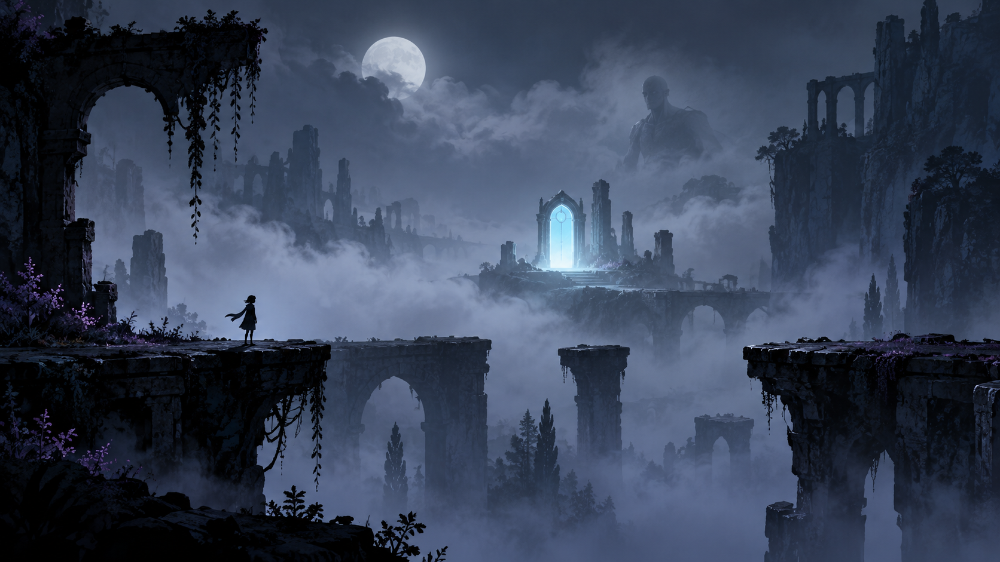
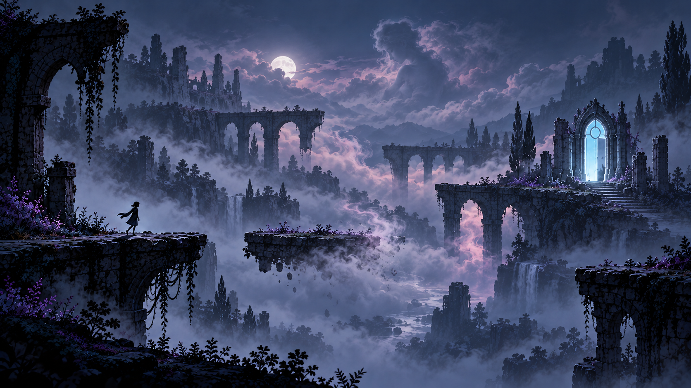

The door
Objective, boundary, promise, and trap. It remains mechanically dependable even as its location becomes impossible.
Narrative + world system
The game escalates by changing what the player can trust—not by adding unrelated mechanics. A door, a figure, and fog recur as evidence, but their meaning never fully settles.


“What did I just see?”
Architecture obeys gravity. Platforms look usable. The route behaves as expected. The tension lives in the remaining five percent.
Fog hides. Curiosity drives the player forward.

“Can I trust what I’m seeing?”
The place remains recognizable, but its visual information conflicts. The player begins testing the image instead of accepting it.
Fog suggests. Uncertainty becomes the core tension.

“Does a stable reality still exist?”
The world no longer pretends to be ordinary. The player stops looking for realism and starts learning a new, internally consistent grammar.
Fog creates. Disorientation becomes a navigable state.
Recurring motifs
Objective, boundary, promise, and trap. It remains mechanically dependable even as its location becomes impossible.
Never approached clearly. It could be observer, guide, memory, scenery, or the player seen from another layer.
First it hides information, then suggests false information, and finally gives form to new structures.
Phantom platform rule
A false platform dissolves. A stable structure catches the player below, revealing that the hallucinated route sat over Reality.
Failure returns the player toward a trusted state and teaches a subtle tell.No stable structure exists below. The fall stretches, sound detaches, and the descent becomes the authored transition into Lost Reality.
The fall is not random death; it is narrative progression with clear staging.